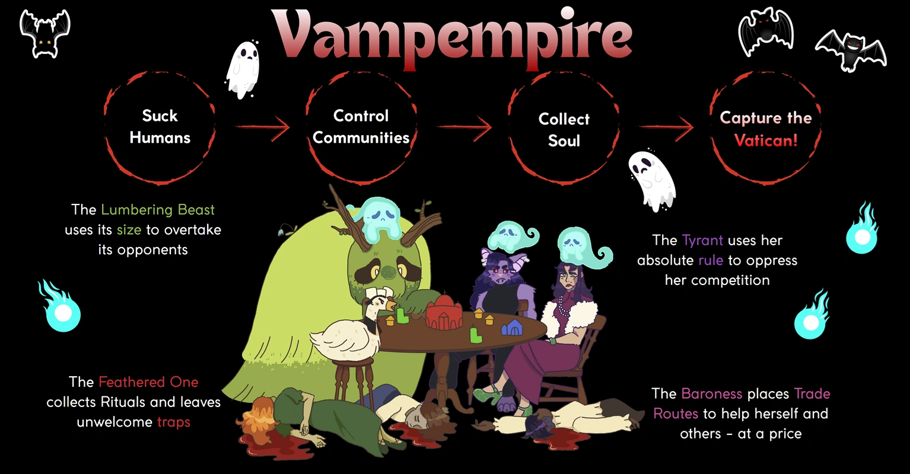
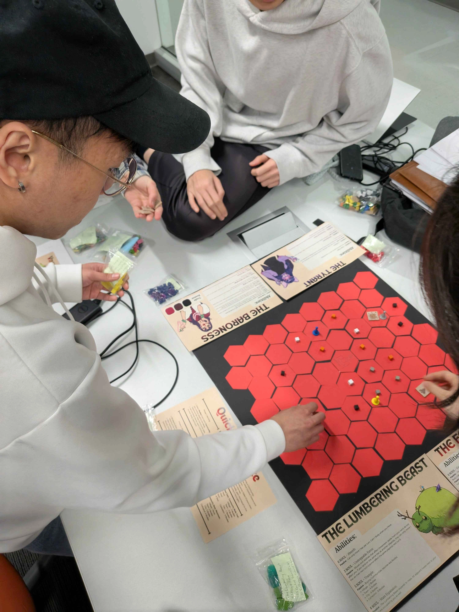
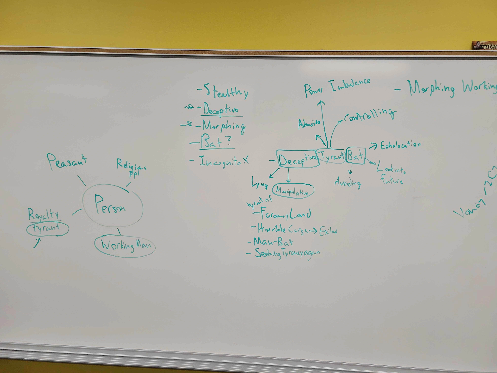
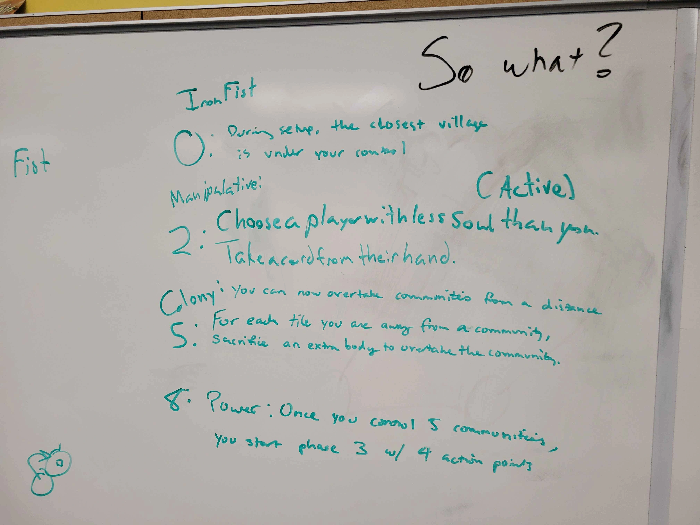
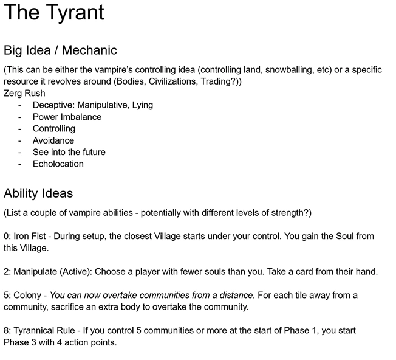
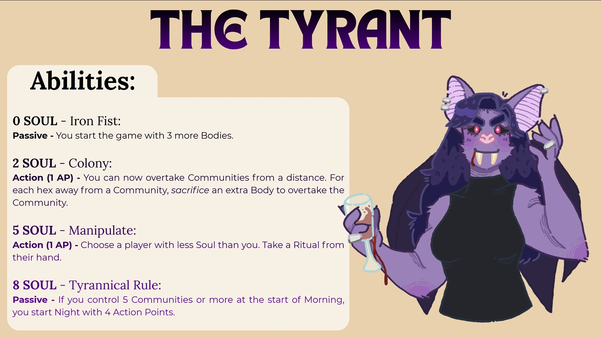
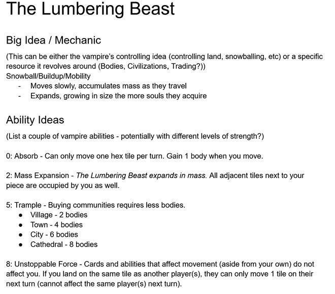
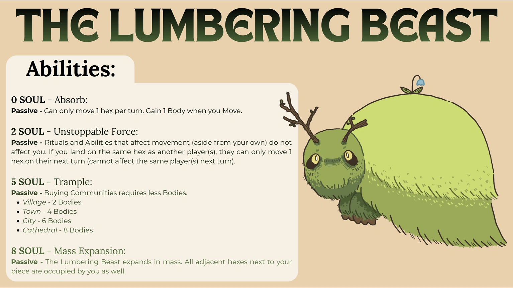
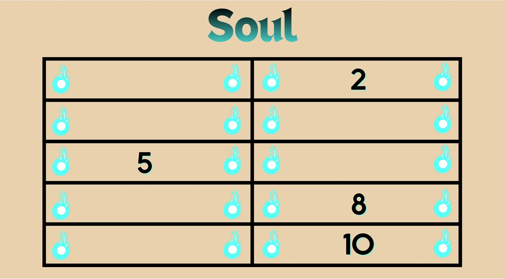
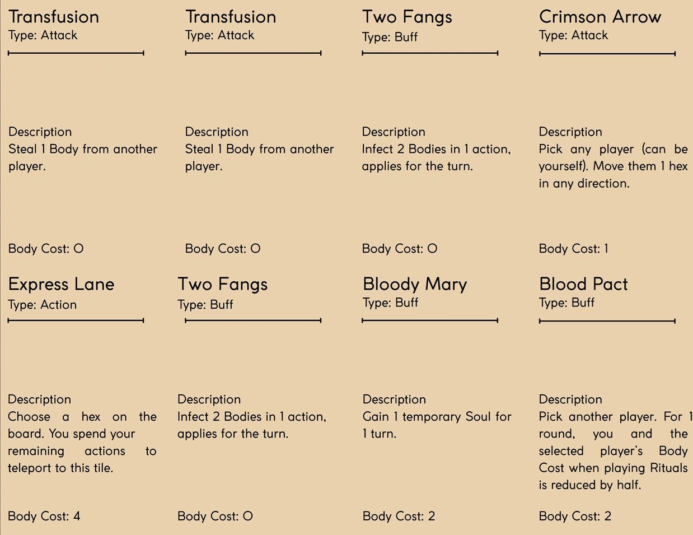

Inspired by the popular board game Root, Vampempire is a fast-paced competitive board game that pits 4 Vampires against one another for control of the Vatican, located at the center of the board. I designed 2 of the 4 Vampires that players can choose to play. This includes designing the Vampire's abilities and iterating and balancing Vampire's powers during gameplay. My main focus was to design Vampires that cater to different playstyles, while also ensuring no one Vampire is overpowered and not viable. The Lumbering Beast is a snowball character where the player starts slow in the early game but quickly ramps up power as the game progresses. The Tyrant offers is an early game Zerg rush, starting the game with more power than other Vampires. However, The Tyrant's power will fall off as the game progresses as other Vampires grow stronger. I also assisted in designing the Ritual action cards and balancing the power and cohesiveness of each card.
Canva, Google Docs, Google Spreadsheet
Less than 6 weeks
4


This is an example of the early stages of me working with my team to ideate the lore and theme of one of the game's playable characters. We wanted to create a character that exemplified a corrupt ruler abusing their power and oppressing their own kingdom. This ruler also has the ability to shapeshift, specifically into a bat.
After brainstorming on a deceptive tyranical bat figure, I worked on ideating the character's ability. As one of the themes is oppression, I designed the character's abilities so their effects feel oppressive to other players. One example of this is designing the character to be an early game threat, which can be seen through her Iron Fist (During setup, the closest village is under your control). Additionally, the character is a tyrant that is constantly power hungry, conquering other lands and expanding their territory. This is shown through their other abilities, which involve taking resources from other players, gaining an advantage in conquering territories and having one more turn action than other players.

After receiving playtest feedback, my team and I found that The Tyrant's abilities were too overwhelming to other players. As a result, I had to redesign not only some of the abilities, but also balance the cost of each ability with when it should be unlocked.
With the new redesigns for The Tyrant, my team and I conducted another playtest and found that players enjoyed the game more and found it more balanced and fun. Playing The Tyrant still gave the player the early game dominance factor. As the game progressed, other players would grow and begin to match The Tyrant's power, resulting in a more balanced and fair mid-late game flow.
The images shows The Tyrant's initial design and final design


The Lumbering Beast is a late game force that should not be reckoned with. It's core mechanic is that it starts the game slow compared to other player's characters. However, as the game progresses, The Lumbering Beast begins to snowball and grow in both power and size. When the game enters the late stages, The Lumbering Beast will be an unstoppable force.
Similar to The Tyrant, players felt The Lumbering Beast's initial design felt too powerful in the mid-late game states. The Lumbering Beast did in fact start the game slow compared to other players, which is what our team aimed for. However, it was still necessary to balance The Lumbering Beast's abilities. With the new balance changes, players agreed that The Lumbering Beast did not ramp up in power too fast. The game flow felt more balanced in that the growth in power between other players were equal or about the same. By late game, The Lumbering Beast still maintained it's dominance in power and size.
The images shows The Lumbering Beast's initial design and final design

I designed the Soul cards so players can easily keep track of how many souls they currently have. The numbers on the board indicate the number of souls required to unlock that ability on the player's respective character card.

I assisted my team in designing the flavor and effects of some Ritual cards. The main mindset when designing these cards were to have them offer unique effects from all 4 character's abilities. These Ritual card effects should also feel like universal effects that all players, regardless of what character they are playing, feel impactful and contribute to helping them win the game.
I also assisted in balancing the Ritual cards as well. This entailed redesigning some cards entirely, especially their effects and also balancing X variable values (i.e - cost to play the Ritual card, how many Bodies or Souls a player can take from target player, etc.)